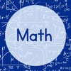

A Matemática é o 'M' do acrônimo STEM (Ciência, Tecnologia, Engenharia e Matemática),
e seu papel é, em essência, o de uma linguagem universal. Ela não é apenas sobre números,
mas uma ferramenta fundamental para quantificar, modelar e entender o mundo ao nosso redor.
Na abordagem STEM, a matemática é o alicerce que sustenta e conecta todas as outras disciplinas.
O Papel da Matemática na Abordagem STEM
Na educação STEM, a matemática é vista como muito mais do que equações e fórmulas.
Ela é a base do pensamento lógico e analítico, integrada a projetos práticos,
tornando seu aprendizado mais relevante e significativo.
- A Linguagem da Ciência: Permite que os cientistas expressem e validem teorias.
Sem ela, conceitos como gravidade, eletricidade ou genética seriam impossíveis de compreender e aplicar com precisão.
- A Ferramenta da Engenharia: Engenheiros usam a matemática para calcular resistência de materiais,
eficiência de motores ou aerodinâmica. É ela que garante a segurança e funcionalidade de construções e microchips.
- A Base da Tecnologia: Programação, algoritmos, criptografia e análise de dados são essencialmente matemática aplicada.
A Matemática como Habilidade Essencial para o Futuro
Dominar a matemática em um contexto STEM não significa apenas resolver exercícios,
mas desenvolver raciocínio crítico valioso em qualquer carreira,
seja em finanças, medicina ou arte. Analisar dados, identificar padrões e resolver problemas complexos
é uma competência crucial no século XXI.
Exemplos Práticos da Matemática em STEM
- Robótica: Aplicação de geometria e álgebra para programar movimentos e orientar robôs.
- Análise de Dados: Coleta e interpretação de dados científicos usando estatística.
- Design de Jogos: Criação da lógica e física de jogos usando equações matemáticas.